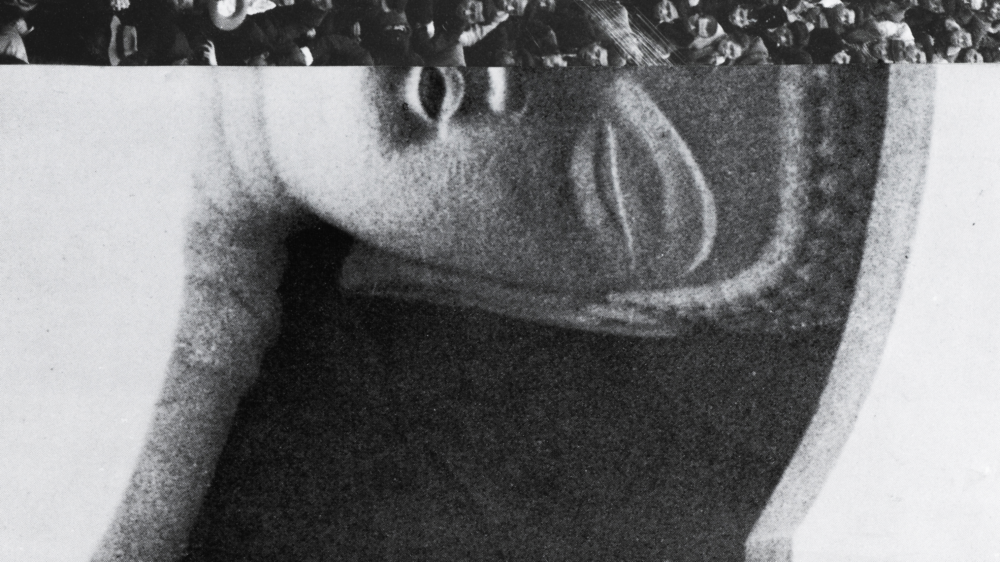
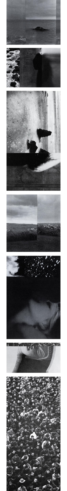

꿈 일기 (Dream Journal)
2019, Archival Pigment Print
꿈 일기를 통해 꿈에서 본 장면을 기록하고, 그 경험을 기억으로 작성한다. 꿈 일기는 꿈을 구체적이고 사실적으로 보이게 하는 중요한 도구이다. 일반 일기와 꿈 일기의 차이는 의식적 통제의 유무에 있다. 꿈은 의식적으로 통제할 수 없으며, 내 의지와 상관없이 내 바람이나 체면을 무시하고 나타난다. 예를 들어, 생각지도 못한 인물이 내 꿈에 등장하고, 나는 예상하지 못한 반응을 보인다. 이 모든 것은 '진짜' 생각과 '진짜' 감정이다. 꿈은 꾸며내지 않는다.
반면, 일기에서는 검열이 작동한다. 의식적으로 "이건 써야겠다"라고 생각하거나, 때로는 스스로에게 거짓말을 할 때도 있다. 예를 들어, 내가 힘들다는 사실을 부정하는 경우가 있다. 그래서 꿈은 때로 불편하고, 오히려 더 사실적이다.
Dream journals are used to record scenes witnessed in dreams and document those experiences as memories. They are vital tools for making dreams appear concrete and realistic. The difference between a regular diary and a dream journal lies in the presence or absence of conscious control. Dreams occur without conscious control, manifesting regardless of personal desires or social appearance. For instance, unexpected characters may appear in dreams, eliciting unforeseen reactions from me. All these are 'real' thoughts and 'real' emotions. Dreams are not fabricated.
Conversely, censorship operates in a diary. One might consciously decide "I need to write this down," or sometimes even lie to oneself. For example, denying the fact that I am struggling. Thus, dreams can be uncomfortable and, paradoxically, more truthful.
